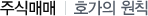

주식교실 ㅣ 주식매매

호가란 매매하고자 하는 유가증권의 종목, 가격, 수량 등을 경쟁자에게 제시하여 매매상대자를 구하는 것으로서, 다음 3가지 종류가 있다.
-
지정가
말 그대로 본인이 원하는 금액을 지정해서 내는 주문이다.
- 예) 하나은행 주식을 주당 10,000원에 30주 매수주문한다.
-
시장가
매매가격을 지정하지 않고 시장 『시세가격』으로 매매해달라는 주문이다. 가격에 구애받지 않고 지금 즉시 사거나 팔고자 할 경우에 유용하지만, 시세가 급변하는 경우에는 높은 가격에 매수하거나, 낮은 가격에 매도될 위험도 있다.
- 예) 하나은행 주식을 시장가로 30주 매도주문한다.(가격에 구애받지 않음)
-
조건부지정가
장중에는 지정가로 주문이 유효하나, 장마감 직전 동시호가 시간에는 시장가로 전환되는 주문입니다. 장중에 체결이 안되더라도, 장마감시에는 그날의 종가로 반드시 체결된다.
- 예) 하나은행 주식을 조건부지정가로 주당 10,000원에 30주 매수주문한다.
(장중에는 한빛증권 주식을 주당 10,000원에 매수하고, 만약 체결되지 않을 시 시장가로 매수하는 주문이다.)
- ※ 관리/감리종목도 시장가, 조건부지정가 주문이 가능합니다.
-
최유리지정가
매도주문의 경우 가장 높은 매수호가의 가격, 매수주문의 경우 가장 낮은 매도호가의 가격으로 주문내는 유형이다.
-
최우선지정가
매도의 경우 가장 낮은 매도호가의 가격, 매수의 경우 가장 높은 매수호가의 가격으로 주문을 내는 유형이다.
-
조건을 부여한 호가유형
보통(지정가), 시장가, 최유리지정가 호가에 한해서 주문조건 부여가 가능한 호가유형이다.
-
IOC호가(Immediate-Or-Cancel Order)
호가의 접수시점에서 호가한 수향 중 체결할 수 있는 수량에 대하여는 매매체결시키고, 체결되지 않은 수량은 취소하는 조건의 주문이다.
-
FOK호가(Fill-Or-Kill Order)
호가의 접수시점에서 주문한 수량의 모두를 체결할 수 있는 경우에는 체결시키고, 그렇지 않은 경우에는 수량 전부를 취소하는 조건의 주문이다.